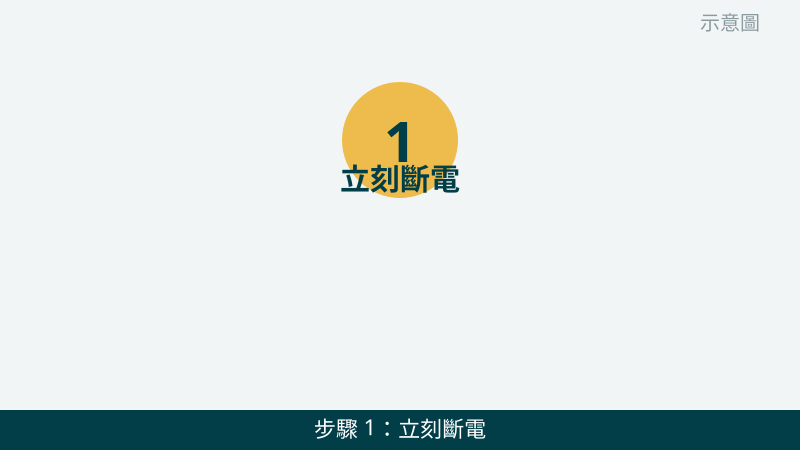
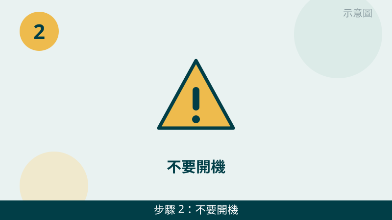
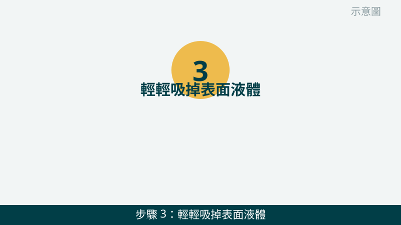
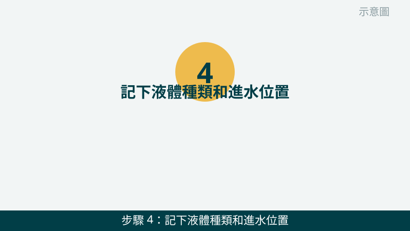
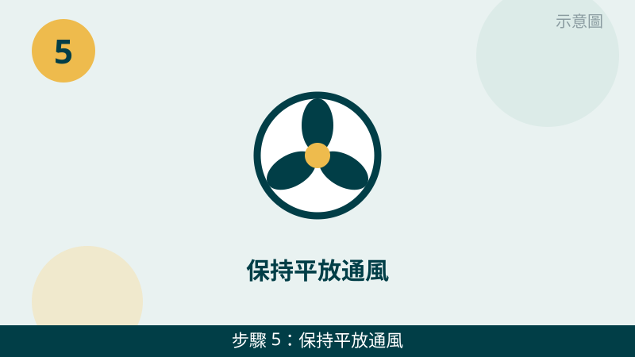

筆電進水確實讓人慌張，但請先放心：處理順序對了，就能把傷害降到最低。最怕的是慌張之下馬上開機、插電測試，通電那一刻反而可能讓短路真的發生。先冷靜照順序做，剩下的交給檢測來確認。
開始之前先跟您說明一個判斷原則：「有沒有通電」比「水多不多」更重要。就算只潑到一點點，只要開機通電，風險就存在；反過來，只要確實斷電、不要再通電，後續檢測就有很多挽救空間。
進水的畫面先傳給我們看
把進水位置、液體種類拍下來傳 LINE，含糖飲料要不要馬上送修，一看就知道。先免費評估、報價透明，確認後再預約維修。
筆電進水自救檢查清單（由急到緩）
- 1. 立刻斷電：先拔充電器，再關機，並拔掉外接裝置。請先把充電線、滑鼠、隨身碟等外接裝置都拔掉，再長按電源鍵關機，不要按一下開機鍵試試看。怎麼判斷：螢幕熄了、風扇停了、充電燈也熄了，才算真的斷電；只要還亮著燈，就還沒斷乾淨。

示意圖（非官方截圖） - 2. 不要開機、不要充電、不要插電測試。斷電之後請忍住，不要想著「開一下看看還能不能用」，也不要接上充電器測試能不能充電。怎麼判斷：只要您還沒送修、還沒經過檢測，任何通電測試都是多餘的風險；沒測試，反而是保護了主機板。

示意圖（非官方截圖） - 3. 輕輕吸掉表面液體，不要用吹風機熱風硬吹，也不要倒置甩水。用乾毛巾或紙巾輕輕按壓吸掉鍵盤和機身表面的水，不要來回用力擦，也不要把筆電倒過來甩、搖晃它。吹風機熱風可能把水往更深處推，也可能傷到零件。怎麼判斷：表面摸起來不再濕濕黏黏的，就可以停手了；裡面看不到的地方，請交給檢測處理，不要自己想辦法弄乾。

示意圖（非官方截圖） - 4. 記下液體種類和進水位置，拍照留存。請回想並記下來：是清水、飲料還是湯汁？潑到鍵盤中間、左邊還是整面？有沒有流到散熱孔或接頭？把這些位置拍下來傳給我們。怎麼判斷：含糖飲料、湯汁因為有糖分和鹽分，乾掉後容易殘留腐蝕，比清水更要儘快送修；清水也一樣不要拖，只是急迫程度略有不同。

示意圖（非官方截圖） - 5. 保持平放通風，不要曬太陽、不要放進密閉袋子。把筆電平放在通風的桌面上，鍵盤朝上，不要倒置、不要曬太陽、不要用電風扇直吹很久就以為乾了。怎麼判斷：通風只是讓表面不再潮濕，不代表裡面乾了；所以這一步只是等待送修的過渡，不是處理完成。

示意圖（非官方截圖） - 6. 儘快拍照傳 LINE、預約送修，不要拖幾天才處理。進水拖越久，腐蝕就越可能擴大。請把第 4 步的照片傳給我們，我們會先免費評估急迫程度，再跟您約送修方式。怎麼判斷：如果傳來的照片顯示是含糖飲料、或已經有開不了機的跡象，我們會建議您優先送修；不確定時，也請先拍照問，不要自己先開機試。

示意圖（非官方截圖）
別再自己試了
- 進水後還想開機、充電測試看看——請先停手，通電可能讓短路真的發生
- 想用吹風機熱風硬吹、把筆電倒置甩水、搖晃排水
- 想自己拆機擦主機板、拆電池，但不確定怎麼拆——請先拍照問我們，不要硬拆，拆壞排線或弄斷卡扣反而更貴
- 進水後放著不管，想等它自己乾，幾天後才送修——含糖飲料尤其不要拖
常見問題
筆電進水後晾乾幾天，就可以自己開機試試看了嗎？
不建議。表面看起來乾了，不代表主機板裡面已經乾了，殘留的水氣和腐蝕可能還在。開機通電後短路的風險反而更高，所以請先不要開機測試，儘快讓我們實機檢測，評估不收費。
清水和飲料、湯汁進水，處理上有差別嗎？
有差別。清水相對單純，但飲料、湯汁含有糖分和鹽分，乾掉後容易殘留、腐蝕零件，所以含糖飲料進水更要儘快送修，不要放著等它自己乾。請把液體種類和進水位置拍照傳給我們，我們會先幫您判斷急迫程度。
進水的狀況拍照傳 LINE，就可以先判斷嗎？
可以先給方向。把進水位置、液體種類、目前有沒有斷電拍下來傳給我們，通常能先判斷要不要馬上送修；要完全確認有沒有傷到主機板，還是需要實機檢測，這部分評估不收費，請放心傳。
相關文章：自救百科總覽